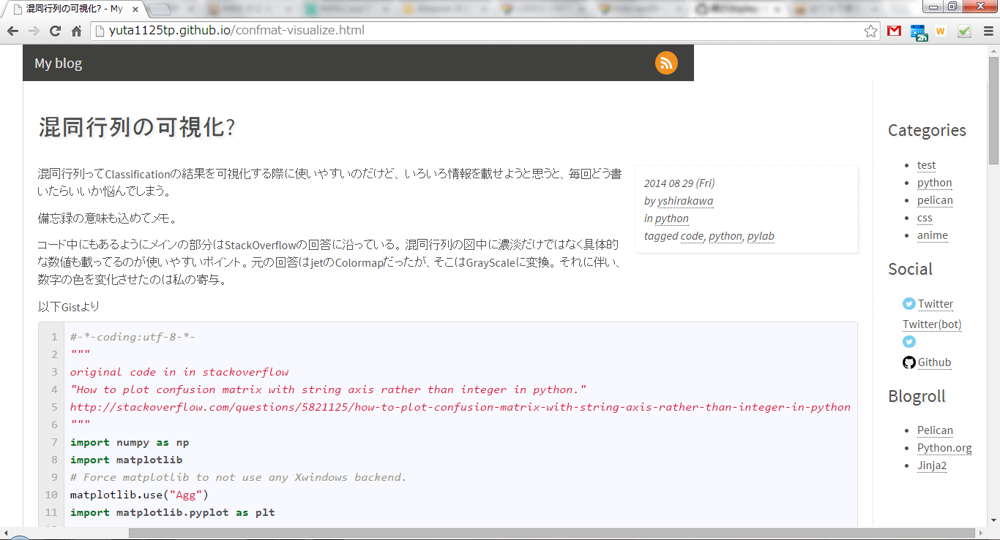

display:table-cell;がうまいこと機能しない
このブログ自体はgithub pageにホストしていて、ソースはPythonのPelicanモジュールにお世話になってる。 デザインは有志の方々がPelicanに投稿してくださった中から選んだpelican-simplegreyというデザインです。
Pelicanはテンプレートから静的HTMLのソースを出力してくれるので、 適当に文章を書いてやれば、テンプレートにしたがって、整形されたHTMLが出力されるということ。 であってると思う。
で、私の使わせて頂いているpelican-simplegreyは2カラムのレイアウトなんですが、通常は75:25で本文とサイドバーが分割される。 これは見栄えを定めるcssファイル中に以下の様な記述があるからなんだけども（一部抜粋）、
body {
font-family: 'Source Sans Pro', sans-serif;
font-size: 16px;
line-height: 150%;
text-align: left;
color: #4D4D4C;
padding: 0;
min-width: 740px;
}
.wrapper {
display: table;
width: 100%;
}
.content {
display: table-cell;
border-left: 1px solid #d6d6d6;
border-right: 1px dotted #D6D6D6;
padding: 0 20px 1em 20px;
}
.sidebar {
display: table-cell;
width: 25%;
border-right: 1px solid #d6d6d6;
padding: 0 20px 1em 20px;
}
ページレイアウト以外にもフォントや色についての記述もあるけど、今回興味のある部分を意訳するならば、
- bodyは最低でも740pixelの幅を保つ。
- .wrapper classはその全体を受け取って
- .content classは特にしていないけどtableの1つのセルであり、
- 同様に.sidebarもtableの1つのセルで、幅は25%に指定されている。
となると思う。
このように100のうち25がサイドバーなので本文は必ず75%になると思うのだけど、 先日投稿した記事は主にgistの埋め込みにより横幅がとても広く取られた。 gistの内容が改行されない程度に本文カラムが拡張されたのである。

これは思ってた挙動と違う。
で、数日HTMLとCSS（とGIST）について調べてたら以下の解決策に辿り着いた。
ありがたい。
どうやらブラウザの環境にも依存するらしいけど、table-layoutにfixedを指定しなければいけなかったらしい。 table-layoutをfixedにしていないのは仕様なのか、意図的なのか。 そこは謎のまま。
今回の件でHTMLやCSSに対する基礎知識を得られたし、いい機会といえばいい機会だった。